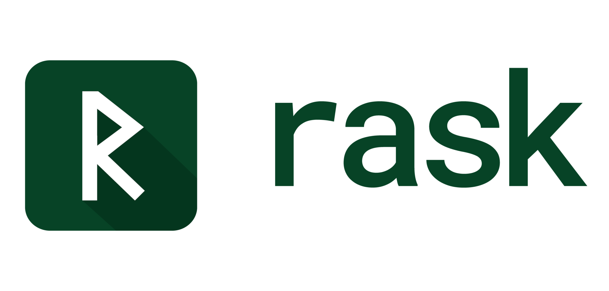
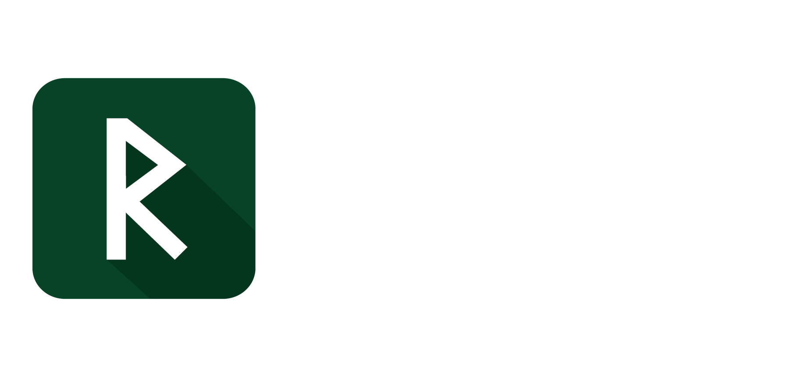

What Rask is
A systems language built around one bet: if references can’t be stored, lifetime annotations stop being necessary.
Borrow a value for a call or an expression and it works the way you’d expect. Put the borrow in a struct field, or return it, and there’s no syntax for what you’re asking — which is the point. Nothing outlives the thing it points at, so there’s nothing to track, and signatures carry types and nothing else.
Graphs need stored references, so exactly one kind exists: a Link into a
Rack. The rack owns every node and outlives every link into it, so even that
one has no lifetime to name.
Somewhere between Rust and Go. Closer to Rust on safety, closer to Go on ceremony.
import fs
import io
func grep(path: string, pat: string) -> void or io.IoError {
mut file = try fs.open(path)
ensure file.close()
let text = try file.read_text()
for line in text.lines() {
if line.contains(pat) { println(line) }
}
}
Three rules meet in those eight lines. fs.open hands back a linear resource
the compiler makes you consume exactly once. ensure defers that consumption
to the end of the scope. try returns early on failure — and because the
consumption is already scheduled, leaving early still closes the file. No
defer discipline to remember, no destructor running out of sight.
Where to start
Rask is early and a solo project. Expect gaps in these chapters and bugs in the compiler; the issue tracker is the honest picture.
New here. Install it, then read the chapters under Learn the language, starting with how to follow along. They take one concept at a time and say why each rule is the way it is, which is the part the specs leave out. There are also exercises in the repo. Nothing to install to look around: the playground runs Rask in the browser.
Already writing Rask. The language card is the whole language on one page for looking a rule up. The example programs are complete and CI-checked. The specs are the normative wording when the other two disagree.
Here for the design. The blog is the long-form argument; CORE_DESIGN.md is the principles it falls out of, and RULINGS.md is how open questions get settled.
Try it in the browser
The playground runs Rask without installing anything. It’s the interpreter compiled to WebAssembly, so the code runs in your browser rather than on a server.
Write code on the left, Ctrl+Enter to run, output on the right. Run tests
runs the file’s test blocks instead of main. The examples dropdown loads the
programs from
examples/, and Copy
link gives you a URL with your code in it.
What it can’t do
A browser has no files, no sockets, no clock and no threads, so anything needing one of those is refused with a message rather than half-working:
fs, io, net, http | no filesystem or sockets |
time | no clock — which is also why benchmark blocks don’t run here |
spawn { }, Thread.spawn { }, ThreadPool.spawn { }, using Multitasking, using ThreadPool | no threads |
extern "C", import c | no libc to call |
Everything else runs: collections, structs, enums, generics, interfaces, pattern
matching, closures, error handling, comptime. Recursion is capped a few
hundred frames deep, because the browser puts a much lower ceiling on call
depth than an OS thread does.
The dropdown only lists examples that actually run here. The rest are in examples/; to run those, install Rask and run the file directly.
Source
Installation
Note: Rask is in early development. Expect breaking changes.
Prerequisites
- Rust toolchain (for building from source)
- Git
- A C compiler (cc) — the runtime is compiled from C
Building from Source
git clone https://github.com/rask-lang/rask.git
cd rask/compiler
cargo build --release
The rask binary will be in compiler/target/release/rask.
Verify Installation
./target/release/rask --version
CLI Commands
| Command | What it does |
|---|---|
rask run <file> | Compile and execute a .rk program |
rask check <file> | Type-check without running |
rask fmt <file> | Format source code |
rask lint <file> | Check style and idioms |
Compiled binaries are written to build/debug/.
Running Examples
The repository includes working examples:
./target/release/rask run ../examples/hello_world.rk
Next Steps
- Learn the language, starting with your first program
Learn the language
These chapters build one program: a small text adventure, the kind called a MUD, where several people can walk the same rooms and talk to each other. It’s a good fit for learning Rask because the game’s rules are the language’s rules. An item lies in one room or sits in one pocket, never both, so picking it up is a move. Rooms lead to rooms. Later, each player is a task of its own.
They’re written for someone who has programmed before, in anything. Where a language you know would lead you to expect the wrong thing, the chapter says so.
How to follow along
Every chapter works with nothing but the rask binary and a text editor. The website
is the same text with Run buttons on top. If you’d rather read offline, clone the
repository and open this file in an editor; the chapters are plain Markdown and
everything they show is next to them in this directory.
git clone --depth 1 https://github.com/rask-lang/rask
cd rask/docs/book/src/learn
Every command in the chapters runs from this directory.
Each chapter from 3 on comes with an exercise file named after it, like
04-types-of-your-own.rk. It is the program so far, with the functions that chapter is
about left empty: their bodies say todo(), and a comment above each says what it
should do. Run its tests, and they fail where the program reaches something you haven’t
written yet:
rask test 04-types-of-your-own.rk
Fill in the functions until everything passes. The finished program is in early/
and mud/, if you want to compare or you get stuck. Nothing checks that you wrote it the
same way, only that the tests pass.
The chapters
- Your first program:
main, printing, names - Types of your own: rooms, items and directions
- Branching and looping: answering a command
- Holding many things: the rooms of the world
- When there might be nothing: an exit that isn’t there
- Errors are values: reading what the player typed
- Passing values: who has the lamp
Your first program
hello.rk, in this directory, is a whole program:
func main() {
let name = "Rask"
println("Hello, {name}!")
}
Run it:
rask run hello.rk
Hello, Rask!
rask run compiles the file to a native program and runs it. A program starts in the
function called main.
let name = "Rask" gives a value a name. println prints a line, and a string can hold
values in braces: "{name}" is replaced by whatever name holds. That’s how values go
into a string. There’s no + for strings, so a string put together from several values
shows all of them in one place.
Names that change
A name made with let holds its value for good. Nothing about that value changes through
it, so when you read let, you know what the name holds for the rest of the block. A name
that needs to change is made with mut:
func main() {
mut visited = 0
visited += 1
visited += 2
println("{visited} rooms visited")
}
The type is worked out from the value. You can write it when you want it on the page:
mut visited: i64 = 0.
Functions
A function says what it takes and what it gives back, and it gives it back with return:
func title(name: string, description: string) -> string {
return "{name}: {description}"
}
func main() {
println(title("Gate", "A rusted iron gate."))
}
Every function that gives back a value says return. A block’s last line doesn’t
quietly become its result, so the place a function hands its answer back is always
written down.
Exercise
03-your-first-program.rk is a program with an empty main. Run it as it is:
rask run 03-your-first-program.rk
panic at 03-your-first-program.rk:12: not yet implemented
That’s todo(), the body every exercise starts with. It stops the program and says where.
Replace it with a main that prints the first room of the game, its name on one line and
its description on the next. The finished version is early/first.rk, and it prints this:
rask run early/first.rk
Gate
A rusted iron gate stands open to the north.
Types of your own
A game needs things to talk about: rooms, the items lying in them, the ways out. Each of those is a type the program declares.
Structs
An item has a name and a description:
public struct Item {
public name: string
public description: string
}
A struct is a value made of named fields. public lets code outside this package
use the type and its fields; within one program you can ignore it until chapter 13.
Building one names every field, in any order:
w.rooms[gate].items.push(Item(name: "lamp", description: "A brass lamp, still half full of oil."))
Item(...) looks like a call because it is one, of the type’s own constructor.
Arguments go by name, so Item("lamp", "A brass lamp") is an error: with two strings in
a row, nothing would say which is which. When a variable already has the field’s name,
the name alone will do. Room(name, description, …) passes the variables name and
description to the fields of the same names.
A field is read with a dot:
struct Item {
name: string
description: string
}
func main() {
let lamp = Item(name: "lamp", description: "A brass lamp.")
println("{lamp.name}: {lamp.description}")
}
A room holds more: a list of the items lying in it, and its exits, each a direction and the room that way. The next chapters are about those two fields. Here they’re only types:
public struct Room {
public name: string
public description: string
public items: Vec<Item>
public exits: Map<Direction, usize>
}
Enums
There are six ways out of a room, and a direction is always exactly one of them:
public enum Direction {
North
South
East
West
Up
Down
}
An enum lists what a value can be. A Direction is Direction.North or one of the five
others, and never anything else, so code that handles all six has handled every
direction there is.
A variant can carry a value of its own. The game’s commands are an enum where some variants carry what they act on:
public enum Command {
Look
Go(Direction)
Take(string)
Drop(string)
Inventory
Say(string)
Help
Quit
}
Command.Go(Direction.North) is one command, and Command.Take("lamp") is another. A
Command.Look carries nothing, because looking needs nothing more said.
Methods
Functions that belong to a type go in an extend block for it:
extend World {
public func new() -> World {
return World(rooms: Vec.new(), here: 0, carried: Vec.new())
}
A function whose first parameter is self is a method, called on a value with a dot:
dir.name(). One without self, like World.new here, is called on the type itself:
World.new(). There’s no separate kind of constructor. new is a function that
happens to return a World.
The method behind dir.name() has to say something different for each direction, and
match is how it asks which one self is:
public func name(self) -> string {
return match self {
Direction.North => "north",
Direction.South => "south",
Direction.East => "east",
Direction.West => "west",
Direction.Up => "up",
Direction.Down => "down",
}
}
Each arm is a variant, an arrow, and the value for it. The arms have to cover every variant. Leave one out and the program doesn’t compile:
error[E0340]: non-exhaustive match: missing Up
--> docs/book/errors/04-types-of-your-own/match_misses_a_variant.rk:9:12
|
9 | return match dir {
| ^^^^^^^^^^^ missing variants: Up
= fix: add the missing variants or a wildcard `_` arm
= why: match expressions must cover all possible values
That’s what makes adding a seventh direction safe: every match that would have to
answer for it stops compiling until it does. The next chapter has more of match.
Exercise
Rooms are joined both ways: going north from the gate reaches the courtyard, and going
south from the courtyard leads back. To make the second exit from the first, the world
needs each direction’s opposite. In 04-types-of-your-own.rk, write
Direction.opposite:
// exercise 04: The way back: north for south, up for down, and so on.
public func opposite(self) -> Direction {
todo()
}
As it stands, most of the tests fail, because building the world joins rooms with it:
rask test 04-types-of-your-own.rk
=== Testing 04-types-of-your-own.rk ===
✗ every direction leads back the way it came
04-types-of-your-own.rk:44: not yet implemented
✓ finding an item by name (0ms)
✓ a direction alone is a move (0ms)
✓ the object keeps its case and inner spaces (0ms)
✓ what can go wrong is a value (0ms)
✗ the game starts at the gate
04-types-of-your-own.rk:44: not yet implemented
✗ walking to the hall
04-types-of-your-own.rk:44: not yet implemented
✗ a dead end and a typo
04-types-of-your-own.rk:44: not yet implemented
✗ picking something up moves it
04-types-of-your-own.rk:44: not yet implemented
✗ putting it down somewhere else
04-types-of-your-own.rk:44: not yet implemented
──────────────────────────────────────────────────
10 tests, 4 passed, 6 failed (0ms)
Once opposite is written, they all pass.
Branching and looping
The game’s whole job is a loop: read a command, decide what it does, answer. This chapter is the deciding and the looping.
if
Describing a room ends one of two ways, depending on whether there’s any way out:
if exits.is_empty() {
return "{text}\nThere is no way out."
}
return "{text}\nExits: {exits.join(", ")}."
The condition is a bool, with no parentheses around it, and the braces are always
there. An if can also be a value, with a colon where the braces would be:
func main() {
let count = 1
let noun = if count == 1: "exit" else: "exits"
println("{count} {noun}")
}
for
A for loop runs its body once for each thing in a collection. Describing a room lists
what lies in it:
mut text = "{room.name}\n{room.description}"
for item in room.items {
text = "{text}\nThere is a {item.name} here."
}
item is each item in turn. text is mut because the loop builds it up a line at a
time.
The exits come next. A room keeps them in a Map, which hands its entries back in no
particular order, so the loop goes through the directions in a fixed order of its own
and asks the room about each:
mut exits: Vec<string> = Vec.new()
for dir in DIRECTIONS {
if room.exits.contains(dir) {
exits.push(dir.name())
}
}
DIRECTIONS is all six, north first. The next chapter has more about Vec and Map.
for i in 0..n counts from 0 up to, and not including, n. while runs as long as a
condition holds, and loop runs until something breaks out of it. A loop is also a
value, the one its break carries:
func main() {
mut steps = 0
while steps < 3 {
steps += 1
}
let found = loop {
if steps == 5 {
break steps
}
steps += 1
}
println("3 steps, then {found}")
}
match
Chapter 4 used match to pick a word for each direction. It also takes values apart. A
variant that carries a value names it in the pattern, and the arm can use it:
enum Command {
Look
Go(string)
Say(string)
}
func answer(cmd: Command) -> string {
return match cmd {
Command.Look => "You look around.",
Command.Go(way) => "You go {way}.",
Command.Say(words) => "You say \"{words}\"",
}
}
func main() {
println(answer(Command.Look))
println(answer(Command.Go("north")))
println(answer(Command.Say("hello")))
}
Command.Go(way) matches any Go and calls what it carries way. A match can match
plain values too. Here’s how the game turns a word into a direction, with | for “or”
and _ for anything else:
public func parse(word: string) -> Direction? {
return match word {
"n" | "north" => Direction.North,
"s" | "south" => Direction.South,
"e" | "east" => Direction.East,
"w" | "west" => Direction.West,
"u" | "up" => Direction.Up,
"d" | "down" => Direction.Down,
_ => none,
}
}
Direction? and none mean “a direction, or nothing”, for a word that isn’t one. That’s
chapter 7.
Exercise
05-branching-and-looping.rk has two functions to write. apply decides what a command
does:
// exercise 05: Answer each command: look describes the room, a direction
// walks, take and drop move an item, and so on down the list.
public func apply(mutate world: World, cmd: Command) -> string {
todo()
}
Every command has a function waiting for it in the same file: describe, go,
pick_up, put_down and inventory. apply is one match that calls the right one. For
Say, answer You say "…" with the words; for Help, the HELP text; for Quit,
Goodbye.. Where a call says mutate world, write it that way. Chapter 9 is about what
it means.
script plays a list of lines against the world, the way a player would type them:
// exercise 05: Look around first, then answer each line in turn. Every
// answer goes in the list, in order.
public func script(mutate world: World, lines: Vec<string>) -> Vec<string> {
todo()
}
respond(mutate world, line) answers one line, and describe(world) is the look around.
Start with mut replies: Vec<string> = Vec.new(), add each answer with replies.push(…),
and return it.
rask test 05-branching-and-looping.rk
=== Testing 05-branching-and-looping.rk ===
✓ every direction leads back the way it came (0ms)
✓ finding an item by name (0ms)
✓ a direction alone is a move (0ms)
✓ the object keeps its case and inner spaces (0ms)
✓ what can go wrong is a value (0ms)
✓ the game starts at the gate (0ms)
✗ walking to the hall
05-branching-and-looping.rk:344: not yet implemented
✗ a dead end and a typo
05-branching-and-looping.rk:344: not yet implemented
✗ picking something up moves it
05-branching-and-looping.rk:344: not yet implemented
✗ putting it down somewhere else
05-branching-and-looping.rk:344: not yet implemented
──────────────────────────────────────────────────
10 tests, 6 passed, 4 failed (0ms)
Write both until they pass.
Holding many things
A world is many rooms, a room holds items, and a player carries some. Two collections
cover all of it: Vec, a list in order, and Map, a lookup from keys to values.
Vec
The world keeps its rooms in a Vec:
public struct World {
public rooms: Vec<Room>
public here: usize
public carried: Vec<Item>
}
Vec<Room> is a list of rooms. rooms[0] is the first one, rooms.len() how many there
are, and rooms.push(room) adds one at the end. A room’s place in the list doesn’t
change once it’s there, so the game names a room by its place: here is where the player
stands, and an exit stores the place of the room it leads to.
Positions and lengths are usize, a whole number as wide as the machine’s addresses.
There are no negative positions, so len() never needs checking for below zero. A
usize goes into a u64 as it is; the other way round can lose values on a smaller
machine, so it’s written as a conversion.
Building the world starts from an empty one:
return World(rooms: Vec.new(), here: 0, carried: Vec.new())
Vec.new() makes an empty list, and its element type comes from where it goes. A list
written out in full uses brackets, ["n", "e"].
Map
A room’s exits are a Map from a direction to the place of the room that way:
public exits: Map<Direction, usize>
Joining two rooms writes an entry into each:
// Both ways: going `dir` from `a` reaches `b`, and the opposite way leads back.
public func connect(mutate self, a: usize, dir: Direction, b: usize) -> void {
self.rooms[a].exits[dir] = b
self.rooms[b].exits[dir.opposite()] = a
}
exits[dir] = b adds the entry, or replaces the one already there. exits.contains(dir)
asks whether there is one. Reading exits[dir] for a key that isn’t there stops the
program, so a lookup that might miss asks with exits.get(dir), which is chapter 7.
A Map gives its entries back in no order you can rely on. That’s why describing a room
goes through DIRECTIONS, a Vec that’s always north first, and asks the room about
each, instead of walking the map and printing the exits in whatever order they come.
Working on one room in place
Copying a room out of the list isn’t allowed:
error[E0871]: `Room` isn't Copy, so `room` would be a second name for the same element
--> docs/book/errors/06-holding-many-things/room_out_of_a_vec.rk:10:16
|
10 | let room = rooms[0]
| ^^^^^^^^ this element stays owned by `rooms`
= fix: scope the access — `with rooms[…] as room { … }` — or ask for a
separate value with `.clone()`
= why: indexing hands the element back where it lives rather than copying it
out, so a binding of a non-Copy element is a second name for storage
the collection still owns — a write through either one is a write
through both. A Copy element is copied and has no such tie
[mem.borrowing/E4]
A room is bigger than the small values that copy for free (chapter 9 has the exact
line), so rooms[0] is the room where it sits in the list, not a copy of it. let room = rooms[0] would make room a second name for that same room, and a change through
either one would show up through the other.
A single expression can reach into the list and act on what it finds:
world.rooms[gate].items.push(lamp) adds to the gate’s items where they are. For more
than one line of work on the same room, a with block names it for the length of the
block:
public func describe(world: World) -> string {
with world.rooms[world.here] as room {
mut text = "{room.name}\n{room.description}"
room is the room where it sits, for as long as the block runs. What the block can’t do
is add to the list or take from it, because that could move the room it’s holding:
error[E0808]: cannot push `rooms` inside `with` block
--> docs/book/errors/06-holding-many-things/push_inside_with.rk:11:9
|
10 | with rooms[0] as room {
| ------------- element borrowed here
11 | rooms.push(Room(name: "Courtyard", items: Vec.new()))
| ^^^^^^^^^^^^^^^^^^^^^^^^^^^^^^^^^^^^^^^^^^^^^^^^^^^^^ push not allowed inside with block
= fix: move the structural mutation outside the with block
= why: rooms can reallocate, invalidating the borrowed element. If the
elements reference each other and get deleted individually, that is
what a `Rack` is for — a node never moves, so nothing invalidates
[mem.borrowing/W2]
Exercise
06-holding-many-things.rk has two functions to write. add_room puts a new room in the
world and answers where it went:
// exercise 06: Add a room with nothing in it and no way out, and answer
// its place in `rooms`, which is how an exit will name it.
public func add_room(mutate self, name: string, description: string) -> usize {
todo()
}
A new room’s items and exits both start empty: Vec.new() and Map.new().
inventory answers the i command:
// exercise 06: List what the player carries, or say there's nothing.
public func inventory(world: World) -> string {
todo()
}
You carry nothing. when the list is empty, and You carry lamp, key. when it isn’t. A
Vec<string> joins into one string with names.join(", ").
rask test 06-holding-many-things.rk
=== Testing 06-holding-many-things.rk ===
✓ every direction leads back the way it came (0ms)
✓ finding an item by name (0ms)
✓ a direction alone is a move (0ms)
✓ the object keeps its case and inner spaces (0ms)
✓ what can go wrong is a value (0ms)
✗ the game starts at the gate
06-holding-many-things.rk:226: not yet implemented
✗ walking to the hall
06-holding-many-things.rk:226: not yet implemented
✗ a dead end and a typo
06-holding-many-things.rk:226: not yet implemented
✗ picking something up moves it
06-holding-many-things.rk:226: not yet implemented
✗ putting it down somewhere else
06-holding-many-things.rk:226: not yet implemented
──────────────────────────────────────────────────
10 tests, 5 passed, 5 failed (0ms)
When there might be nothing
Some things might not be there. A room may have no exit to the west, and the lamp may
be somewhere else. T? is the type for that: a T, or nothing at all.
struct Item {
name: string
description: string
}
struct Player {
name: string
holding: Item?
}
name is always there. holding might not be, and the ? is the whole difference.
Nothing else in the program can forget it: there is no path where an empty hand arrives
looking like an item. The empty case is written none.
Asking what’s there
match takes both cases:
struct Item {
name: string
}
struct Player {
name: string
holding: Item?
}
func show(p: Player) -> string {
return match p.holding {
Item as item => "{p.name} holds a {item.name}",
none => "{p.name} holds nothing",
}
}
func main() {
println(show(Player(name: "ada", holding: Item(name: "lamp"))))
println(show(Player(name: "bo", holding: none)))
}
Player(name: "ada", holding: Item(name: "lamp")) passes a plain Item where an Item?
goes, and it’s taken as “there is one”.
The shorter form tests with x? and names the value with as:
struct Item {
name: string
}
func main() {
let holding: Item? = Item(name: "lamp")
if holding? as item {
println("ada holds a {item.name}")
}
}
as item names what the test just proved is there, and item is a plain Item inside
the block. Without as, x? is only a bool, and x is none asks the opposite.
?? supplies the other case
Most of the time you don’t want to branch, you want a value either way. ?? gives its
right side when its left is none:
struct Item {
name: string
}
func main() {
let holding: Item? = none
let name = holding?.name ?? "nothing"
println("holding {name}")
}
holding?.name is the item’s name if there is an item, and none if there isn’t, so
it’s a string?. The ?? turns that into a string. A longer chain, a?.b?.c, works
the same way: any missing link makes the whole chain none, and it’s still one layer of
“might not be there”, so one ?? finishes the job.
The right side of ?? can also leave instead of producing a value. Picking up an item
looks for it, and if it isn’t on the floor there’s nothing more to do:
let i = find_item(room.items, thing) ?? return "There's no {thing} here."
find_item answers usize?: the item’s place in the list, or none. After that line,
i is a plain usize, because the only way past it is with an item found. ?? break and
?? continue leave a loop the same way.
Exercise
07-when-there-might-be-nothing.rk has two functions to write. find_item is the one
the line above calls:
// exercise 07: Where the item called `name` sits in `items`, or none if
// it isn't there.
public func find_item(items: Vec<Item>, name: string) -> usize? {
todo()
}
return i hands back a usize where a usize? goes, the same as passing a plain Item did
above, and return none says it isn’t there.
go walks the player through an exit:
// exercise 07: Walk `dir` from here, and describe where that leads. If there's
// no exit that way, say so and stay put.
public func go(mutate world: World, dir: Direction) -> string {
todo()
}
room.exits.get(dir) is the place of the room that way, as a usize?. When there’s no
exit, answer You can't go west. with the direction’s name. When there is, set
world.here to it and answer with describe(world).
rask test 07-when-there-might-be-nothing.rk
=== Testing 07-when-there-might-be-nothing.rk ===
✓ every direction leads back the way it came (0ms)
✗ finding an item by name
07-when-there-might-be-nothing.rk:86: not yet implemented
✓ a direction alone is a move (0ms)
✓ the object keeps its case and inner spaces (0ms)
✓ what can go wrong is a value (0ms)
✓ the game starts at the gate (0ms)
✗ walking to the hall
07-when-there-might-be-nothing.rk:274: not yet implemented
✗ a dead end and a typo
07-when-there-might-be-nothing.rk:274: not yet implemented
✗ picking something up moves it
07-when-there-might-be-nothing.rk:86: not yet implemented
✗ putting it down somewhere else
07-when-there-might-be-nothing.rk:86: not yet implemented
──────────────────────────────────────────────────
10 tests, 5 passed, 5 failed (0ms)
Errors are values
A player can type anything. Most of it is a command, and the rest needs an answer that says what went wrong. When a call can fail, the failure comes back out of it, as an ordinary value.
A type that says both
Reading what the player typed gives back a command, or a reason it isn’t one:
public func parse(line: string) -> Command or ParseError {
Command or ParseError is the whole story in the signature. The reasons are an enum of
the game’s own:
public enum ParseError {
Empty
UnknownVerb(string)
MissingObject(string)
NoSuchDirection(string)
}
Every error type has a message(), the sentence a person reads. An enum gets one
written for it, and ParseError writes its own, worded for a player:
extend ParseError {
public func message(self) -> string {
return match self {
ParseError.Empty => "Say something.",
ParseError.UnknownVerb(v) => "I don't know how to '{v}'. Try 'help'.",
ParseError.MissingObject(v) => "{v} what?",
ParseError.NoSuchDirection(w) => "'{w}' isn't a direction.",
}
}
}
Returning one is plain return. return ParseError.Empty from a function that returns
Command or ParseError is the error side, and return Command.Look is the other.
catch: handle it here
match can take a result apart by type, the way chapter 7 took an optional apart. The
answer to “the player typed nonsense” is nearly always the same, though: say why, and
wait for the next line. catch is that arm on its own:
public func respond(mutate world: World, line: string) -> string {
let cmd = parse(line) catch e => return e.message()
return apply(mutate world, cmd)
}
catch e => names the error and says what to do with it. Here that’s leaving with its
message. On the success path, cmd is a plain Command.
The name is required. catch e => uses the error, catch _ => throws it away on
purpose, and there’s no third form where it disappears unwritten:
error[E0100]: `catch` needs a binder
--> docs/book/errors/08-errors-are-values/bare_catch.rk:20:31
|
20 | let verb = parse("dance") catch "look"
| ^^^^^ here
= fix: write `catch e => value` to use the error, or `catch _ => value` to
drop it — there is no bare-value form, so an error is never swallowed
silently
= why: a fallback is the one form here that can destroy information. `??`
discards a `none`, which carried nothing; `catch` discards or
transforms an error, which carried a payload someone should look at.
So the binder is what makes the second one legible — `catch _ =>` is
the spelling for "an error dies here", and it greps [type.errors/ER14]
try: hand it up
Parsing go west means parsing west, and that can fail too. When it does, parse
doesn’t want to handle it, only to pass it on:
"go" => Command.Go(try direction(rest)),
try takes the value out of a result, or returns the error to the caller unchanged. It’s
direction(rest) catch e => return e, written once. That only works in a function with
somewhere to put the error, an or in its return type:
error[E0316]: `try` requires function returning Result or Option, found `void`
--> docs/book/errors/08-errors-are-values/try_without_a_carrier.rk:20:16
|
20 | let verb = try parse(line)
| ^^^^^^^^^^^^^^^ try used here
= fix: change the function return type to `T or E`
= why: `try` propagates errors upward — the enclosing function must declare
an error type in its return
!: stop
The last thing to do with an error is give up. ! takes the value out, and stops the
program if it’s an error:
panic at docs/book/panics/08-errors-are-values/force_on_an_error.rk:22: ! on a value that was an error: I don't know how to 'dance'.
That’s a panic, which is not an error value. It has no type, no caller can handle it, and
it stops the task it happens in. The tests use ! because a test that gets an error where
it expected a command has already failed:
test "a direction alone is a move" {
assert parse("n")! == Command.Go(Direction.North)
assert parse(" go west ")! == Command.Go(Direction.West)
}
For anything a caller could deal with, hand it back with try.
Pieces of a string
parse splits the line at its first space:
mut verb = text.to_lowercase()
mut rest = ""
if text.index_of(" ")? as i {
verb = text[0..i].to_lowercase()
rest = text[i + 1..].trim().to_string()
}
text[0..i] is the part of text from position 0 up to i, without copying anything. It
can’t outlive the line it’s on, because it points into text, so a piece that’s kept goes
through .to_string() (or another method that makes a new string, like to_lowercase).
index_of answers a usize?, since there might not be a space.
Exercise
08-errors-are-values.rk has the two helpers parse calls left empty:
// exercise 08: The direction `word` names, or why it doesn't name one.
func direction(word: string) -> Direction or ParseError {
todo()
}
// exercise 08: What `verb` acts on, or an error when nothing follows it.
func object(verb: string, rest: string) -> string or ParseError {
todo()
}
go with nothing after it is ParseError.MissingObject("go"), and a word that isn’t a
direction is ParseError.NoSuchDirection with the word. Direction.parse(word) answers a
Direction?. take, drop and say with nothing after the verb are MissingObject
with the verb.
rask test 08-errors-are-values.rk
=== Testing 08-errors-are-values.rk ===
✓ every direction leads back the way it came (0ms)
✓ finding an item by name (0ms)
✗ a direction alone is a move
08-errors-are-values.rk:167: not yet implemented
✗ the object keeps its case and inner spaces
08-errors-are-values.rk:172: not yet implemented
✗ what can go wrong is a value
08-errors-are-values.rk:172: not yet implemented
✓ the game starts at the gate (0ms)
✓ walking to the hall (0ms)
✓ a dead end and a typo (0ms)
✗ picking something up moves it
08-errors-are-values.rk:172: not yet implemented
✗ putting it down somewhere else
08-errors-are-values.rk:172: not yet implemented
──────────────────────────────────────────────────
10 tests, 5 passed, 5 failed (0ms)
Passing values
Every parameter answers one question: does the caller still have this afterwards?
For a lot of values the answer is yes and there’s nothing to think about. For the rest, the code says which answer applies, at both ends.
Small values are copied
A direction, a room’s place in the list, a count: pass one, and the function gets a copy
of its own. go takes the direction that way:
public func go(mutate world: World, dir: Direction) -> string {
Nothing is written about dir at either end, because nothing about it changes for the
caller.
The line is 16 bytes or less, with every field itself copyable. That covers the numbers,
bool, char, string (a string is never changed in place, so a copy of one shares the
text) and small structs and enums built out of those. It’s a fixed line, not a setting.
So for that whole family, pass it around and stop worrying. The rest of the chapter is about everything else.
Everything else has one owner
An Item is two strings, 32 bytes, so it’s over the line, and so is a Vec or a World.
Copying one means copying everything it holds, and Rask doesn’t do that unless the code
says .clone(). So a value like that has one owner at a time: one name is responsible for
it, and when that name goes away, so does the value.
That leaves three things a function can do with one: read it, change it, or take it.
Reading: the default
Describing a room reads the world and changes nothing:
public func describe(world: World) -> string {
No marker at either end, and the reason is that nothing happened. The caller’s world is
the same after the call as it was before, and describe reads it where it is, without a
copy. That’s what most parameters do.
The function can’t keep it, either. When the call returns, the reading is over, so there’s nothing left pointing at the caller’s world. The compiler calls this borrowing.
Changing it: mutate
Walking changes where the player is, so go takes the world to write to, and says
mutate. The call site says it too:
Command.Go(dir) => go(mutate world, dir),
That’s required. Leave it off and the compiler names the one-word fix:
error[E0373]: `go` mutates `world` — mark it at the call site
--> docs/book/errors/09-passing-values/missing_marker.rk:18:8
|
18 | go(world, 1)
| ^^^^^ passed to the `mutate world` parameter
= fix: go(mutate world, 1)
= why: the compiler backstops a misread *move* — using a value after it's
moved is an error — but nothing backstops a misread mutation: both
readings are legal code, so the one that can't be caught gets written
down. The marker follows the signature, not the argument's size, so a
Copy argument writes it too. A method receiver is exempt —
`player.take_damage(10)` operates on the receiver by construction
[mem.parameters/PM4, PM5]
A misread move gets caught for you: use a value after it’s gone and the compiler says
where it went. A misread change doesn’t. The value is still there afterwards, only
different, and both readings are legal code. So the case nothing can catch is the one
the code writes down, and a reader of apply sees which commands change the world
without opening a single function.
mutate asks for a name made with mut. A let name promises its value doesn’t change
through it at all, so it can’t be lent to something that changes it:
error[E0302]: cannot mutate `world` — declared `let`
--> docs/book/errors/09-passing-values/let_as_mutate.rk:18:15
|
18 | go(mutate world, 1)
| ^^^^^ `world` is a let binding — immutable
= fix: replace `let world` with `mut world`
= why: `let` bindings forbid rebinding and mutation. Use `mut` when you need
to modify the value or call mutating methods.
Taking it: take
Picking up the lamp moves it. It leaves the room’s items and joins what the player carries:
world.carried.push(room.items.remove(i))
remove(i) takes the item out of the room’s list and hands it over. push is declared
push(mutate self, take item: T), and take means it keeps what it’s given. Once that line
has run, the lamp is in carried and nowhere else. There’s no second copy anywhere for
the room to still be holding, which is the game’s rule exactly: an item is in one place.
take needs no marker at the call site, because the compiler catches a misread one. Use
a value after something took it, and the error says where it went:
error[E0800]: use of moved value: `lamp`
--> docs/book/errors/09-passing-values/use_after_take.rk:20:13
|
19 | world.carried.push(lamp)
| ---- value moved here
20 | println(lamp.name)
| ^^^^ value used here after move
= note: `Item` is 32 bytes (copy threshold is 16) — assignment moves instead
of copying
= help: add `lamp.clone()` if you need an independent copy
take can’t be written on a type that is always copied, like a number or a string,
because the caller would keep theirs and the word would be wrong:
error[E0404]: `take` on `u64` takes nothing — a Copy value is copied, not given
--> docs/book/errors/09-passing-values/take_on_copy.rk:6:40
|
6 | func walk_to(mutate world: World, take room: u64) {
| ^^^^ `room` is a `u64`, and the caller keeps theirs
= fix: drop the keyword: `room: u64`
= why: a mode marker is read at the call site to know what happens to the
argument, so one that says the wrong thing is worse than none
[mem.parameters/PM6c]
Passing a copied value to a take parameter is fine, though. push on a Vec<u64>
copies the number in, and the caller still has it.
The receiver is never marked
add_room changes the world it’s called on:
public func add_room(mutate self, name: string, description: string) -> usize {
and the call says nothing:
let gate = w.add_room("Gate", "A rusted iron gate stands open to the north.")
The value before the dot is the thing being worked on, which is what the dot means. Marking it would put noise on every method that changes anything.
Exercise
09-passing-values.rk has picking up and putting down left empty:
// exercise 09: Move the item called `thing` off the floor and into what the
// player carries. It leaves the room: an item is only ever in one place.
public func pick_up(mutate world: World, thing: string) -> string {
todo()
}
// exercise 09: The other way: from what the player carries onto the floor.
public func put_down(mutate world: World, thing: string) -> string {
todo()
}
find_item finds where an item is in a list, remove takes it out, and push puts it
in another. Answer You take the lamp. and You drop the lamp., or
There's no lamp here. and You don't have a lamp. when it isn’t there. Working on the
room means a with block, from chapter 6.
rask test 09-passing-values.rk
=== Testing 09-passing-values.rk ===
✓ every direction leads back the way it came (0ms)
✓ finding an item by name (0ms)
✓ a direction alone is a move (0ms)
✓ the object keeps its case and inner spaces (0ms)
✓ what can go wrong is a value (0ms)
✓ the game starts at the gate (0ms)
✓ walking to the hall (0ms)
✓ a dead end and a typo (0ms)
✗ picking something up moves it
09-passing-values.rk:287: not yet implemented
✗ putting it down somewhere else
09-passing-values.rk:287: not yet implemented
──────────────────────────────────────────────────
10 tests, 8 passed, 2 failed (0ms)
When one owner isn’t enough
A value in Rask sits in one place and one name is responsible for it. That covers almost everything you write.
Three situations break it, and each has one answer: Shared, Rack with Link, and Heap.
They have little in common, so there’s nothing to learn as a set. You go looking for one when you
have its problem.
Most of the time: a plain field
struct Player {
name: string
health: i64
items: Vec<string>
}
mut hero = Player(name: "Ada", health: 100, items: [])
hero.items.push("lamp")
hero.health = hero.health - 10
println("{hero.name} has {hero.health} hp and {hero.items.len()} item")
hero owns that player. The fields are reached with a dot, the Vec inside grows when you push to
it, and when hero goes out of scope the whole thing is released. Nothing more is involved.
Having many of something doesn’t change that. A Vec or a Map is an ordinary value that happens
to keep its contents on the heap, so it’s owned by one name like anything else.
So what breaks it? Another part of the program needs the same value. Or your values need to refer to each other. Or a type needs to contain itself.
When another part needs the same value: Shared
Say your settings are read in one place and updated in another. A copy for each is the wrong shape, because then there are two settings and an update to one is invisible to the other. What you want is a single value that both places reach.
struct Settings {
theme: string
retries: i64
}
let settings = Shared.new(Settings(theme: "dark", retries: 3))
That’s the whole of it for most uses. Shared.new is always a correct answer: it takes a
read-write lock, so any number of readers go at once and a writer gets it to itself. It’s safe to
send to another task.
What you give up is reaching the value with a plain dot. Every access says read or write:
let theme = settings.read().theme
println("theme is {theme}")
settings.write().retries = 2
Each of those takes the lock, does the one thing, and releases it, all inside the expression.
When you need several statements to happen under one lock, with holds it open for a block. Here
the read and the write have to be the same lock, or another task could change retries in between:
with settings.write() as s {
if s.retries < 5 {
s.retries = s.retries + 1
}
}
Taking a lock is a real cost, and a real cost is visible in Rask source. Scoping it puts the unlock where you can see it too: the block ends, the lock releases.
Shared takes a strategy that decides which lock it uses, and the default is the one above. The
other two are worth reading about the day a profiler points at the lock, and not before.
Things that point at each other: Rack and Link
Rooms with exits, nodes with children, anything where one value refers to another and values get
removed while others still refer to them. A Vec can’t do this: the index you saved means
something different after a removal, and nothing tells you.
struct Room {
name: string
exit: Link<Room>?
}
A Rack holds the values. A Link is how one of them refers to another.
mut rooms: Rack<Room> = Rack.new()
let hall = rooms.insert(Room(name: "hall", exit: none))
let cell = rooms.insert(Room(name: "cell", exit: none))
hall.exit = cell
if hall.exit? as e {
println("hall leads to {e.name}")
}
Now delete the room that hall points at:
rooms.delete(cell)
if hall.exit? as e {
println("hall leads to {e.name}")
} else {
println("hall leads nowhere")
}
The same if, run twice, prints hall leads to cell and then hall leads nowhere.
That’s the part worth keeping. Deleting a node doesn’t leave hall.exit aiming at a dead value,
and it doesn’t leave you an index that now means some other room. Every link into the deleted node
reads as absent, so the if above simply takes its other branch.
Types that contain themselves: Heap
A Heap<T> puts the value somewhere else and keeps only its address.
That’s what a recursive type needs. A struct containing itself has no size: a Step holding a
Step holds a Step, and the number never settles. An address doesn’t grow, so holding one
settles it at once.
import memory.Heap
struct Step {
label: string
next: Heap<Step>?
}
func main() {
let second = Heap(Step(label: "rinse", next: none))
let first = Heap(Step(label: "wash", next: second))
ensure drop(first)
println("{(*first).label}")
if (*first).next? as n {
println("{(*n).label}")
}
}
second is committed by the next line moving it into first, and storing it in that field hands
it over for good: the chain belongs to first now, so releasing first releases all of it.
Heap is the one of the three you release by hand, because it’s the one that owns an allocation of
its own with nothing around it to do the job. Rask has no destructors, so nothing runs behind your
back at the closing brace. That’s the ensure drop(first) above.
The ensure goes immediately after the line that allocates, and the compiler holds you to it:
error[E0882]: `frame` has no cleanup committed yet
--> docs/book/errors/beyond-one-owner/heap_no_cleanup.rk:14:5
|
12 | let frame = Heap(Frame(label: "canvas", width: 1920))
| ----------------------------------------------------- `frame` was acquired here
...
14 | println("{(*frame).label}")
| ^^^^^^^^^^^^^^^^^^^^^^^^^^^ this runs while `frame` has nothing scheduled to close it
= fix: add `ensure drop(frame)` on the line after it's acquired, then use
`frame` freely
= why: a panic here would leak it — nothing is scheduled to clean it up, and
there are no destructors to fall back on
That program does release the value, on the last line. The complaint is about the lines in
between: a panic anywhere in them leaves with nothing scheduled to clean up. Putting the ensure
first costs nothing, because consuming the value later cancels it.
Choosing
Four questions, asked in order. Stop at the first yes.
- One value, one owner? A plain field. Done.
- Many values?
VecorMap, unless: - They refer to each other and can be deleted?
RackandLink. - Does another part of the program need the same value, and does it change?
Shared.
One more question sits outside that list, and asking it alongside the others is what makes these
feel harder than they are: does the type contain itself? That’s Heap, and the answer doesn’t
depend on any of the four above.
Reading it as one sentence: plain fields until you have many, Vec and Map until they refer to
each other, Rack when they do, and a lock only once a second task exists. Steps 1 and 2 are
most programs.
One thing to watch
Shared is not the only thing that holds a value still while you look at it. Reading an element
of a Vec in a with block does the same thing:
mut items: Vec<Item> = [Item(count: 1)]
with items[0] as first {
first.count = first.count + 1
items.push(Item(count: 9))
}
That doesn’t build, and the push is why:
error[E0808]: cannot push `items` inside `with` block
--> docs/book/errors/beyond-one-owner/push_inside_with.rk:14:9
|
12 | with items[0] as first {
| ------------- element borrowed here
...
14 | items.push(Item(count: 9))
| ^^^^^^^^^^^^^^^^^^^^^^^^^^ push not allowed inside with block
= fix: move the structural mutation outside the with block
= why: items can reallocate, invalidating the borrowed element. If the
elements reference each other and get deleted individually, that is
what a `Rack` is for — a node never moves, so nothing invalidates
[mem.borrowing/W2]
Pushing can move the whole buffer somewhere else, which would leave the binding pointing at storage that isn’t the element any more. Note what’s frozen: the collection, not the element. You can read and write other elements freely. It’s growth that’s the problem, because growth is what moves things.
Running it
The Shared and Rack code above is one program, and it prints:
Ada has 90 hp and 1 item
theme is dark
retries now 3
hall leads to cell
hall leads nowhere
Rules behind this page
- Shared, Rack and Heap: all three, and why you can’t write your own
- Racks: links, deletion, and what a stale one reads as
- Synchronization: the three strategies
- Borrowing: inline access and
with - Linearity: why
Heapneeds anensure
Examples
Complete programs, not fragments. Each one lives in
examples/ with a recorded output in
tests/golden/, which enrolls it in the example gate: every CI run compiles it on both
backends and diffs what it prints. A program listed here works, or the build is red.
| Program | What it exercises |
|---|---|
| grep_clone.rk | CLI flags, file reads, catch on the error branch, string scanning |
| file_copy.rk | Error enums with message(), optionals, own at a call site |
| game_loop.rk | Frame update, interfaces, worker threads. Read it for the loop, not the storage (see below) |
| text_editor.rk | Undo stack, ensure cleanup, linear resources. Same storage caveat |
| parameter_modes.rk | Borrow, mutate, take. The subject of Passing values |
Run one:
rask run examples/grep_clone.rk -- -n pattern file.txt
There were walkthrough chapters here. They quoted code by hand, were checked only for
parsing, and drifted: the game-loop page taught Pool<T>, which the design replaced with
racks and links. Guide chapters now pull their code out of these programs
(how this book is built),
so a walkthrough can’t say something the program doesn’t do.
Formal Specifications
The formal language specifications are maintained in the repository’s specs/ directory. These are detailed technical documents for language implementers and those who want deep understanding.
Organization
Specs are organized by topic:
- Types - Type system, generics, interfaces
- Memory - Ownership, borrowing, resources
- Control - Loops, match, comptime
- Concurrency - Tasks, threads, channels
- Structure - Modules, packages, builds
- Stdlib - Standard library APIs
Quick Access
Key specifications:
| Topic | Link |
|---|---|
| Ownership | ownership.md |
| Borrowing | borrowing.md |
| Collections | collections.md |
| Racks and Links | racks.md |
| Error Types | error-types.md |
| Concurrency | async.md |
For Users vs Implementers
- This Book - User-facing documentation (“How do I use Rask?”)
- Specs - Formal specifications (“How does Rask work internally?”)
Most Rask users won’t need the specs. If you’re:
- Building applications → This book is for you
- Building compilers/tools → Read the specs
- Curious about internals → Specs provide complete detail
See Also
- CORE_DESIGN.md - Design philosophy and rationale
- METRICS.md - How the design is validated
Contributing
Rask is in active design and development. Contributions welcome!
How to Help
- Try it out - Run examples, report bugs
- Review specs - Provide feedback on language design
- Implement features - Check TODO.md for open tasks
- Documentation - Improve this book
Getting Started
- Read the Design Process to understand Rask’s philosophy
- Check out the formal specifications
- Explore the CORE_DESIGN.md document
- Look at TODO.md for what needs work
Repository
Ways to Contribute
Bug Reports
Found a bug? Open an issue.
Include:
- Code that demonstrates the bug
- Expected behavior
- Actual behavior
- Compiler output
Feature Suggestions
Have an idea? Open an issue for discussion.
Consider:
- Does it align with core principles?
- What’s the tradeoff?
- How does it affect the litmus tests?
Code Contributions
- Fork the repository
- Create a feature branch
- Make your changes
- Run tests:
cd compiler && cargo test - Submit a pull request
Documentation
Improvements to this book are welcome:
- Fix typos and clarity issues
- Add examples
- Improve explanations
- Expand placeholder sections
Community Guidelines
- Be respectful and constructive
- Focus on technical merit
- Consider tradeoffs and design constraints
- Test your changes
Questions?
Open a discussion or issue on GitHub.
Design Process
Rask’s design is guided by clear principles and measured against specific metrics.
Design Principles
- Safety Without Annotation - Memory safety without lifetime markers
- Value Semantics - No hidden sharing or aliasing
- No Storable References - References can’t escape scope
- Transparent Costs - Major costs visible in code
- Local Analysis Only - No whole-program inference
- Resource Types - I/O handles must be consumed
- Compiler Knowledge is Visible - IDE shows inferred information
Full details: CORE_DESIGN.md
Validation
Rask is validated against test programs that must work naturally:
- HTTP JSON API server ✓ (passes type-checking)
- grep clone ✓ (implemented)
- Text editor with undo ✓ (implemented)
- Game loop with entities ✓ (implemented)
- Embedded sensor processor ✓ (passes type-checking)
Litmus test: If Rask is longer/noisier than Go for core loops, fix the design.
Metrics
Design decisions are evaluated using concrete metrics:
- Clone overhead (% of lines with .clone())
- Graph edge-write cost (nanoseconds)
- Compile times (seconds per 1000 LOC)
- Binary size
- Memory usage
See METRICS.md for the scoring methodology.
Specs and RFCs
Language features are documented as formal specifications in specs/.
Major changes follow an RFC process:
- Open an issue for discussion
- Draft a specification
- Implement in compiler
- Validate against litmus tests
- Update metrics
- Merge if it improves the design
Tradeoffs
Every design has tradeoffs. Rask makes these intentional choices:
- More
.clone()calls - Better than lifetime annotations (our view) - An edge write touches the target too - Better than raw pointers with manual tracking
- No storable references - Simpler mental model, requires restructuring some patterns
- Explicit costs - Better than hidden complexity
See CORE_DESIGN.md § Tradeoffs for full discussion.
Contributing to Design
When proposing changes:
- Explain the problem - What use case is difficult today?
- Show the tradeoff - What does this cost?
- Test against litmus tests - Does it make real programs better or worse?
- Measure the impact - Update relevant metrics
- Consider alternatives - What other approaches exist?
The goal is ergonomics without hidden costs. If a feature hides complexity or breaks transparency, it probably doesn’t belong.
Philosophy
“Safety is a property, not an experience.”
Users shouldn’t think about memory safety—they should just write code. The type system and scope rules make unsafe operations impossible by construction.
“If Rask needs 3+ lines where Go needs 1, question the design.”
Ceremony should be minimal. Explicit costs are good; boilerplate is bad.
“Local analysis only.”
Compilation should scale linearly. No whole-program inference, no escape analysis. Function signatures tell the whole story.
Learn More
- CORE_DESIGN.md - Complete design rationale
- METRICS.md - How we measure success
- TODO.md - What’s being worked on
- Formal Specifications - Detailed technical specs
How this book is built
Rules for anyone adding a page. They exist because a book is a second copy of the language, and the usual fate of a second copy is to drift until it teaches a version of the language nobody ships.
What a page may contain
Prose, and code that something else already verifies. Nothing else.
| You want to show | Write it as |
|---|---|
| A few lines from a real program | {{#include ../path/prog.rk:anchor}} |
| A small self-contained snippet | an inline block with <!-- test: compile --> or <!-- test: run | expected output --> |
| What the compiler says when you get it wrong | {{#include ../../errors/<chapter>/<case>.out}} |
| What a program prints | {{#include ../../../../tests/golden/<name>.out}} |
| Lines of a file, in a page that has to read as raw Markdown | <!-- from: path --> on the line above the block |
<!-- test: parse --> does not count as verified anywhere in the book. Parsing proves the
syntax is current; syntax is not what rots. The front-page snippet passed test: parse
while calling fs.open, which the real grep program doesn’t use, and missing both its
imports, so a reader copying it got two errors on page one. compile type-checks;
run | expected runs it and matches the output. Use one of those.
CI runs the markers in its “Docs snippets parse” step, which has covered docs/ for a
while. What it can’t tell you is whether a block has a marker at all, or whether the one
it has is strong enough, which is what tests/book_gate.sh is for. It also checks that every include resolves: the file is
present and the named anchor really is in it, because mdBook renders a missing anchor as
nothing at all and says so quietly.
The tutorial
“Learn the language” is read in a clone as often as on the site, so its chapters can’t
use {{#include}}: in the raw file it’s a directive, not the code. A block that shows a
file carries <!-- from: path --> instead, and tests/book_gate.sh checks its text is a
run of that file’s lines, verbatim. That goes for program output too, pinned under
learn/output/.
The program is learn/mud/. An exercise file is that program with the bodies of the
functions marked // exercise NN: <task> replaced by todo(), generated from the files
learn/exercises lists for it. Never edit one by hand. The shell commands in the
chapters run in order, and a command followed by an output block has to print it.
tests/learn_gate.sh --update regenerates the exercises and the outputs;
tests/learn_gate.py has the rules.
Errors are content
Chapters teach with real compiler output. Each case is a program under
docs/book/errors/<chapter>/ that must not compile, with its rask check output
pinned beside it. The gate re-renders and diffs on every run, so improving a diagnostic
shows up as a diff on the page that teaches it, which is the review you want. A case
that starts compiling is a hard failure, not a stale golden: the page is claiming a
rejection the compiler no longer makes.
Regenerate after a deliberate diagnostics change:
tests/book_gate.sh --update
How to explain it
The machine is the metaphor. Describe what actually happens in memory, in plain words, and don’t build a story on top of it.
Lending is the cautionary case. In a library the book leaves the shelf; in Rask the
caller goes on reading the value for the whole call. A reader who builds the library
model predicts the wrong thing at their first mutate call — and learned it here.
Rask can afford the literal route where most languages can’t. No lifetime annotations, no reference type, no effects: every rule is a claim about bytes and where they sit. So make the claim.
One noun carries it: storage. A place in memory holding a value. A name reaches storage, a move hands it over, a borrow reads storage the function doesn’t own, a copy makes a second one. Define it once and don’t introduce a parallel vocabulary three chapters later.
Idea first, word second. Build the model in plain language, then attach the term in one sentence, as a hook for the error messages:
A function that takes a value without
takereads the caller’s storage where it sits — it doesn’t get a copy, and it doesn’t get to keep it. The compiler calls this borrowing, and you’ll see the word in error messages.
Jargon is a label for something the reader already has. Arriving before the idea is what makes a language feel like it was written for people who already know it.
Spend a metaphor only where the literal thing isn’t observable. In Rask that’s almost nowhere, which is the design working rather than a style choice. Every spend should feel like a defeat.
The test for a paragraph: could a reader predict the next error message from what it just told them? If they’d have to re-derive it from a metaphor first, the paragraph is doing the wrong job.
No “I”, and no decisions. The style guide keeps first person for design writing, where someone is owning a tradeoff. A chapter isn’t that. It explains a language that already works, to someone trying to use it, so it says what the rule is and why it holds: “taking a lock is a real cost, so it belongs in the source where it happens”, never “I picked scoped access over making a shared value feel like a plain one”. Same reasoning, no author in the room.
The difference from the section below is worth keeping straight. The why belongs in a
chapter. The choosing doesn’t: alternatives that were weighed, what was rejected and
what it would have cost are design writing, and they live in specs/ and
RULINGS.md. A reader
learning Shared needs the reason the lock is visible. They don’t need to know it was
ever up for debate.
Write the language, not the compiler’s current mood
A chapter describes the language as it’s designed. A bug in one backend is a bug, not a smaller language, and it never decides what a page is allowed to teach.
When the two backends disagree the interpreter is the reference, so a block that runs
correctly there is correct. Mark it <!-- test: run-interp | expected -->, which exists
for this, and file the native gap. The block stays verified, the chapter stays honest,
and the marker is what the fix later deletes.
What this rules out is quietly teaching less. The scoped-access chapter dropped recursive Heap
for a day because the recursive case doesn’t lower on native (#1234), and what the page
taught instead was a smaller language that happens to match one backend’s bugs. A reader
can’t tell the difference between “Rask doesn’t do this” and “Rask does this and the
compiler is behind”, and only one of those is true.
Caveats about what’s broken don’t belong in a chapter either. They date instantly and they’re the issue tracker’s job.
The book teaches the ruling, not just the rule
The specs are normative and say what the rule is. A chapter’s job is the part the spec tables leave out: why it holds. “The marker is required” is a spec line. “A misread move is caught for you and a misread mutation isn’t, so the one that can’t be caught is the one you write down” is a chapter.
Note what that example doesn’t do: it never mentions the alternative, or that anyone
chose. It gives the reader the reason and stops. That’s the line between a why, which
belongs here, and a decision, which belongs in specs/.
specs/RULINGS.md is where those arguments come from. If a chapter can’t say why, it’s restating the spec and should link to it instead.
Size is capped by the language, not by the author
specs/DAY_ONE.md holds the reading set: the concepts you need to read someone else’s Rask, which must fit one page. The guide inherits that budget: roughly one chapter per Day-One concept, and no chapter for something that isn’t in the language yet.
This is the answer to books that grow to a thousand pages: the guide can’t outgrow the
language, because its table of contents is the language’s own list. Anything deeper goes
to specs/, which is allowed to be long.
What to do when the language changes
Nothing, usually. That’s the point: included code moves with its program, error renderings are regenerated by the gate, program output comes from the goldens. The prose only needs touching when a decision changes, which is rare and deliberate.
If you find yourself keeping a page in step by hand, the page is built wrong.